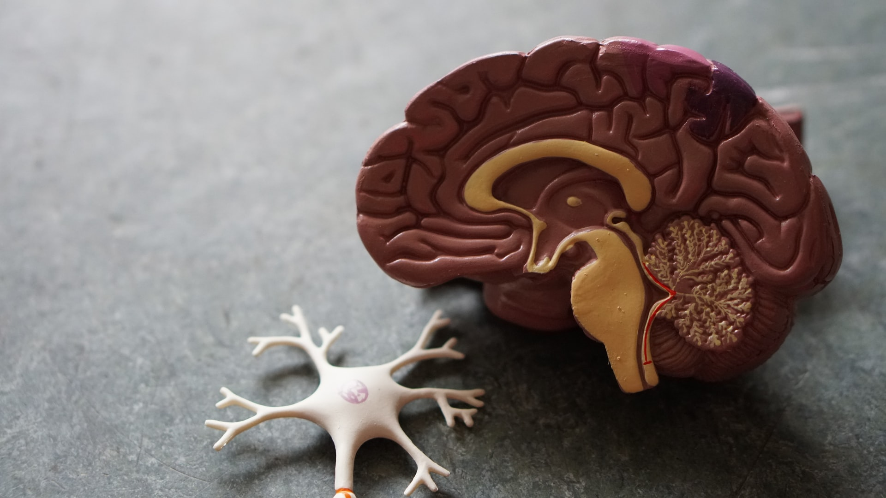
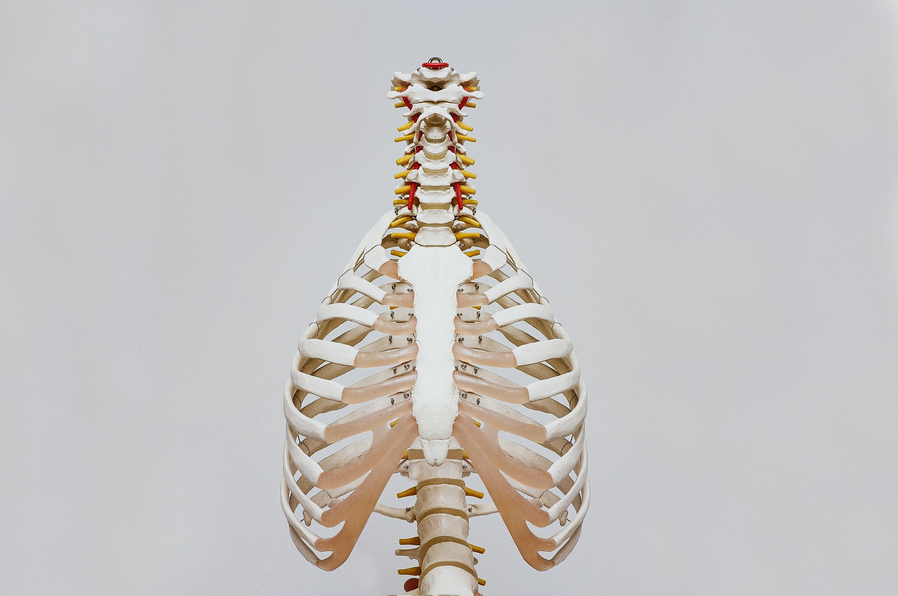
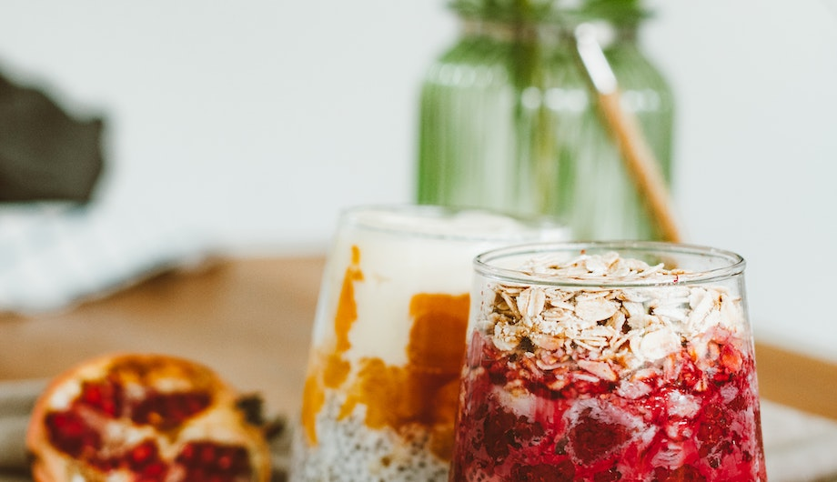
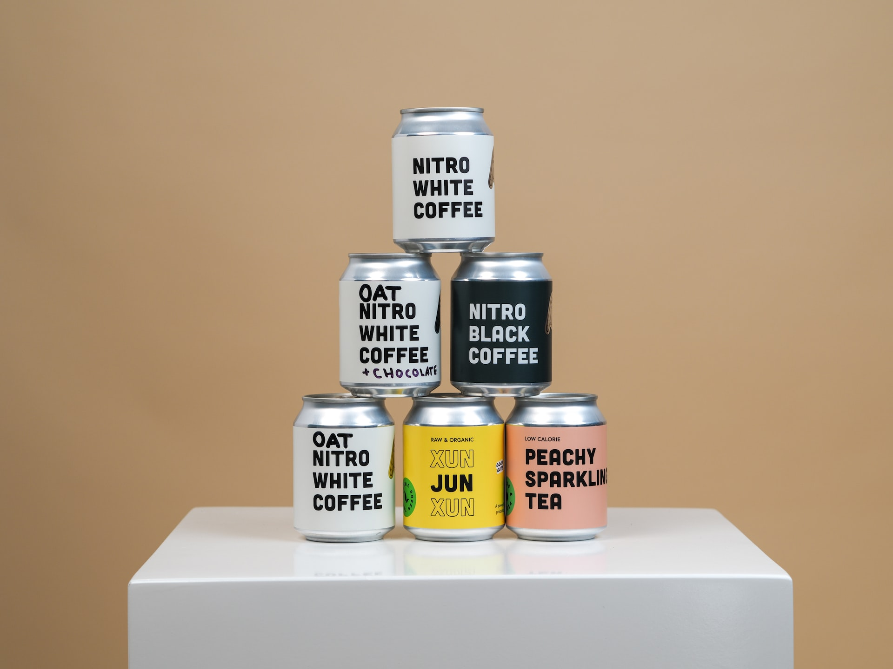
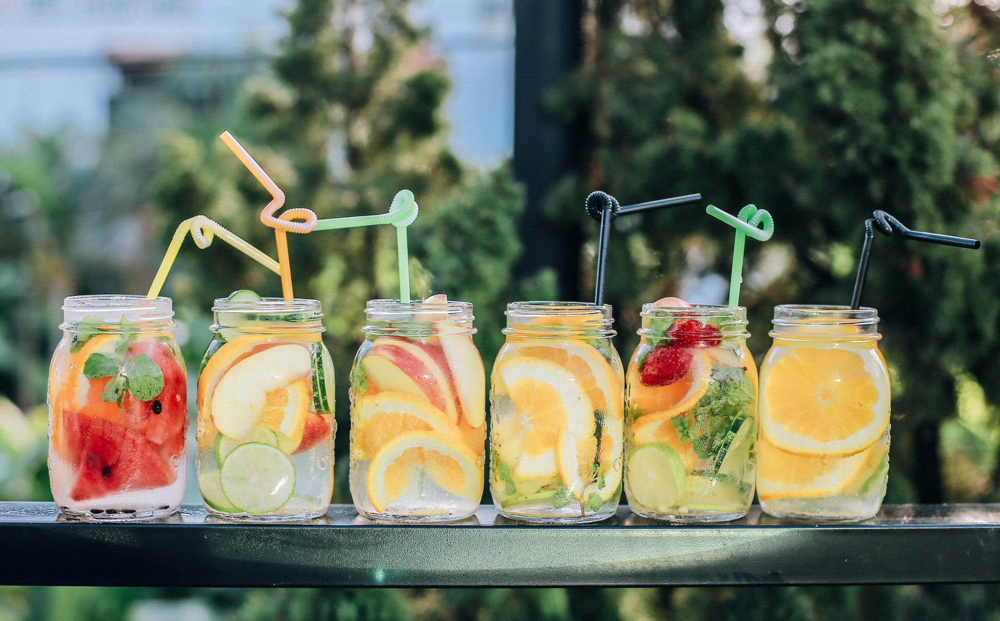
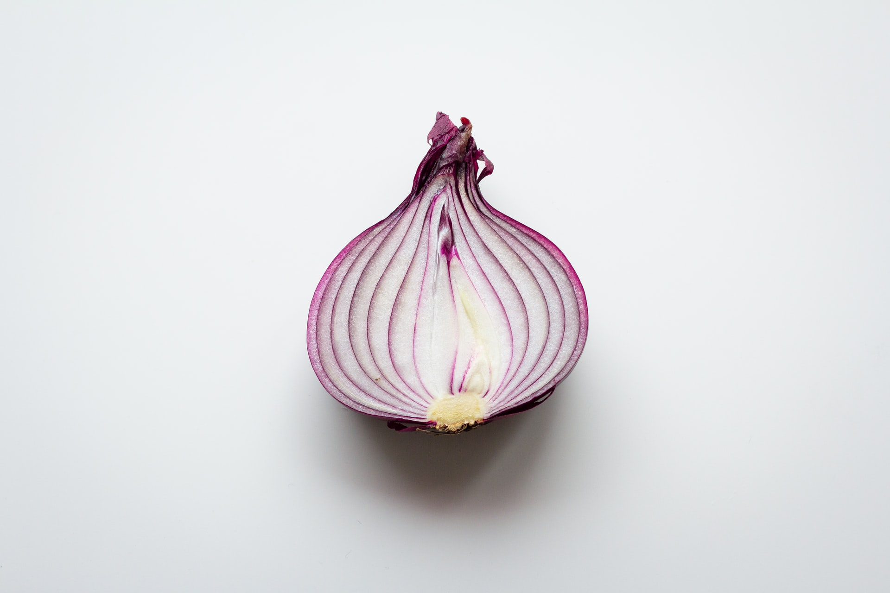
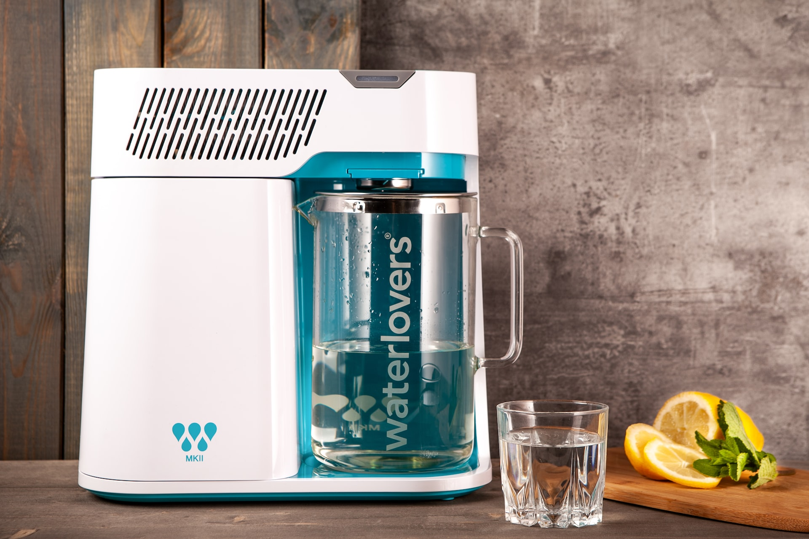

Beslenme, bağırsak mikrobiyolojisini düzenlemede çok önemlidir. Sağlıklı bağırsak mikrobiyatasını koruyabileceği gibi hastalıkların da seyir edebileceği bir ortam hazırlayabilir. Bu yüzden “ne yiyorsak oyuz” diyebiliriz.
Good Gut => Good Brain
Şimdi vücudumuzu ve içerisinde olup bitenleri daha yakından inceleyelim.
Beyinden vücudumuza giden birtakım sinirlerimiz vardır. Bunlar omurilik aracılığıyla ya da direkt olarak hedef organlara yayılırlar. Direkt olarak hedef organlara giden sinirlere “kraniyal sinirler” deriz. Bu sinirler toplam on iki tanedir. Bunlardan en önemlilerden birisi de “v”agus siniri”dir.
Brain => (sinirler) => Organ
Bizim için çok çok önemli olan “vagus” sinirini ele alalım. Etimolojik olarak “gezgin” anlamına gelir. Bu gezgin sinir sindirim sistemimiz başta olmak üzere birçok sistem ilede bağlantılıdır. Kalp, akciğer ve hatta ses tellerine kadar bağlantısı bulumaktadır. Heyecanlandığımız zaman kalp atışımız ve nefes alışımız hızlanır, mide ya da bağırsaklarımızda sıkışma ağrı görülebilir. Bu da vagus sinirin uyarılmasından kaynaklıdır.
Yapılan bir araştırmada vagus sinirinin işlevinin önlenmesi sonucu kilo kaybına neden olurken, uyarılması sonucu farelerde yemek bozukluğu davranışı görülmüştür. Sonuç olarak vagus siniri sindirim sistemimiz ve bağırsaklarımız üzerinde oldukça etkilidir ve beyinle arasındaki bağlantıda önemli söz konusuna sahiptir.
Sindirim sistemi üzerinde bağlantıları olduğunu söylediğimiz vagus siniri bakın nelere daha sebep oluyor: istemediğiniz herhangi bir diyeti yaptığınızda ve yasaklanan ya da tüketimine ara verdiğiniz yiyecekleri beyne sinyaller yollarak bu yasaklı besinlerin daha çok tüketimini istemektedir. Masum ve duygusal olarak limbik sisteme bağlıyız diyebiliriz. Masum dedik çünkü, vagus siniri aslında istemediğiniz şeyleri size zorla yaptırmaz, diyet yapacak olduğumuz zaman mutlu ve isteğimize göre diyetler yapmalıyız. Duygusal olarak limbik sisteme bağlıyız dedik çünkü, biz aslında duygularımızın hedefiyizdir. Nasıl heyecanlandığımızda, üzüldüğümüzde ya da çok mutlu olduğumuzda anlık yemek yeme durumumuzda farklılık gösteriyorsak bunları da duygularımız ile ilişkilendirebiliriz. Mutlu ruh hali mutlu bağırsak demektir. Mutlu bağırsak da yediklerimizin verimliliğini bir o kadar arttırması demektir.
Bağırsaklarımıza farklı bir açıdan bakacak olursak, bir insan vücudunda yaklaşık 10 trilyon hücre bulunmaktadır. Peki sadece bağırsaklarımızdaki mikroorganizma sayısı kaçtır? Toplam hücre sayımızın on kat daha fazla olduğunu düşünün… Evet bağırsaklarımız bu yüzden çok önemlidir ve bu hücreleri korumak da bizim elimizdedir.
MİKROBİYOMUZU BESLEMEK
Buradaki amacımız kalori ya da kilo hesabı olmamalıdır. Bize en uygun mikrobiyota nedir? ,önceliğimiz bu olacak şekilde yola çıkmalıyız. Çıktığımız bu yolda bireyin sağlıklı beslenmesi kontrol altına alınmış daha rahat ve ferah bir yaşam seyrediyor olacağız.
Sağlıklı mikrobiyota için neler yapılmalı?
1-Probiyotik bakımından zengin gıdalar tercih edilmeli
Dünya Sağlık Örgütü terminolojisine göre probiyotik: “Yeterli miktarda tüketildiğinde kişi üzerinde yararlı etki gösteren yaşayan mikroorganizmalardır” şeklinde tanımlamıştır. Peki her fermente gıda probiyotik midir? Hayır, değildir. Bir gıdanın probiyotik olabilmesi için Türk Gıda Kodeksi’ne gçre 10^6 koloni bakteri içermelidir.
Probiyotik gıda tercih ettiğimiz zaman koloni miktarına dikkat etmeliyiz ve aynı zamanda etiket okumaya önem göstermeliyiz. Türkiye’de yeni yapılan çalışmalarda artık probiyotik gıdaların üzerinde hangi bakterilerin olduğu de belirtilmeye başlanmıştır. Probiyotik gıdalara örnek verecek olursak: Lactobacillus, Pediococcus, Streptococcus, Lactococcus, Bifidobacterium, Bacillus, Bacteriodes, Küf ve Mayalar örnek verilebilir. Küf ve maya için ayrı bir parantez açmak istiyorum. Aramızda küflü peynir sonucta küften oluşmuştur, tüketmeyelim o zaman diyenler olacaktır. Unutmayalım ki her küf ya da mayanın iyisi kötüsü vardır. Özel küflerdeki peynirdeki bakteriler de bizim için faydalı olacak bakterileri barındırmaktadır. Örnek verecek olursak salatalığa kötü bakteri geldiğinde çürür, iyi bakteri geldiğinde fermente olarak turşu halini alır.
Probiyotik ve etki mekanizmaları
Huzursuz bağırsak sendromu, iltihaplı bağırsak hastalıkları (Crohn hastalığı, ülseratif kolit), obezite, alerji, diyabetes mellitus, kanser, kalp hastalıkları, kolesterol ve bağışıklık sisteminde etkilidir. Diyareye engel olduğu bilinmektedir ve B vitamini senztezinde rol oynamaktadır.
Probiyotiklerde mukozal bağışıklığımızı oluşturan, bağırsakla ilişkili lenfoid doku bulunur. Buna “GALT” denir. Bütün bu bağışıklığın yaklaşık %80’ini oluşturur. GALT ve probiyotik bakteriler yakın ilişki halindedir. Bu yüzden gereksiz antibiyotik kullanımı probiyotik bakterin çoğunu öldürür ve immün sistemimiz yani bağışıklığımız çökebilir. Antibiyotikler probiyotikleri azaltan nedenlerin başında gelmektedir.
Bazı antidepresanların bağırsak mikrobiyomunu bozup disbiyosiz yarattığı çalışmalarda belirtilmiştir. Antidepresanların probiyotikleri depresif edeci etkileri de bulunmaktadır.
Bazı probiyotikler yağ kütlesinin azalmasını da sağlamaktadır. Bu da aç kalarak(!) değil, doğru beslenme ile de fazla kilolardan kurtulabilirsiniz demektir.
Probiyotik Gıdalar
Kefir, kımız, kombu çayı, kimchi, Alman usulü lahana turşusu, salatalık turşusu, fermente edilmiş balık, et ve yumurtalar, sebze-meyve turşuları, kültüre edilmiş soslar, şalgam, tarhana, probiyotik yoğurt, havuç suyu.
2- Prebiyotik bakımından zengin gıdalar tercih edilmeli
Hindiba, yer elması, sarımsak, soğan, pırasa, Meksika turpu
3- Düşük karbonhidratlı, yüksek kaliteli yağlı besinlerle beslenme tercih edilmeli
Lifli gıdalardan tüketme, iyi bağırsak bakterilerini besler ve bağırsak duvarını kontrol altında tutabilmek için kısa zincirli yağ asitlerini (KZYA) dengede tutar. Düşük karbonhidratlı beslenme dediğimiz zaman sadece sebze ile beslenme gibi bir düşünce ortaya çıkıyor. Yanlış, aksine bir tabak yemekte 2/3 sebze ise geriye kalan kısmı proteinden oluşmalıdır. Önemli olan dengeyi sağlamaktır, proteinleri tamamen hayatımızdan çıkarmak yanlış olacaktır. Yüksek yağlı besinlerde sağlıklı yağlara örnek verecek olursak; sızma zeytinyağı, susam yağı, hindistan cevizi yağı, zeytin, sert bakabuklu yemişler, peynirler(küflü peynirler hariç).
4- Kahve ve çay tüketimine dikkat etmeliyiz
Kahve ya da çay bireye enerji vermez. Yorgun hissetmenizi sağlayacak maddenin önüne geçerek daha dinç hissedebilirsiniz. Tabiki porsiyona dikkat edip fazlaya kaçmamalıyız. Unutmayalım ki her şeyin fazlası bize zarar olarak geri döner.
5-Filtrelenmiş su tüketin
6-Yemek yeme ortamını gürültüden uzak sakin ve huzur dolu ortamda gerçekleştirin
Yapılan çalışmalara göre yemek yeme ortamının sakin ortamlarda yapılmasıyla beraber gıdaların işlevlerini daha aktif hale getirildiği ve emilimlerinde son derece olumlu sonuç alındığı görülmüştür.
7-Spor yapmaya özen gösterin

Yoga ve meditasyon yemek konusunda irademizi artırabileceği yönünde söylemler mevcuttur. Spor, bireyi stresten uzak tutar ve bu da mutlu bir yaşama vesile olur.
Anasayfaya Dön